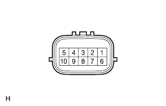
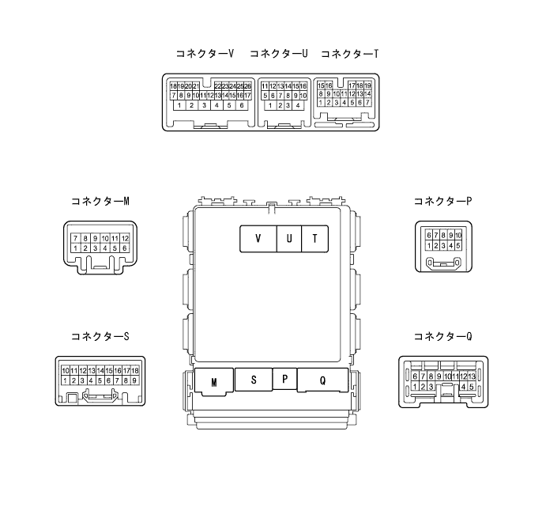

Smart Entry & Start System (Smart Entry) Terminals of ECU |
Inspect Certification ECU
Disconnect the smart key computer assembly connector.
Using SST (Toyota electrical tester), inspect each terminal of the vehicle side wire harness connector.
| Inspection Terminal (Terminal Symbol) | Condition | Standard |
|---|---|---|
| 1(+B)←→17(GND) | Always | 11 to 14 V |
| 17 (GND) ←→ Body ground | Always | Below 1 Ω |
| 18(IG)←→17(GND) | IG ON→OFF | 11 to 14 V → 1 V or less |
| 19(ACC)←→17(GND) | ACC ON→OFF | 11 to 14 V → 1 V or less |
Connect the smart key computer assembly connector.
Using SST (Toyota electrical tester), inspect each terminal of the connector.
| Inspection Terminal (Terminal Symbol) | Condition | Standard |
|---|---|---|
| 3(TSW1)←→17(GND) | IG ON, driver side door outside handle assembly lock switch OFF → ON | 11 to 14 V → 1 V or less |
| 4(TSW2)←→17(GND) | IG ON, front passenger side door outside handle assembly lock switch OFF → ON | 11 to 14 V → 1 V or less |
| 5(SEL1)←→17(GND) | All doors closed, all doors LOCKED, carrying the electrical key transmitter, move 5 m or more away from the driver side door → carrying the electrical key transmitter (electronic key), approach within 70 cm of the driver side door | 11 to 14 V → 1 V or less |
| 6(SEL2)←→17(GND) | All doors closed, all doors LOCKED, carrying the electrical key transmitter, move 5 m or more away from the front passenger side door → carrying the electrical key transmitter (electronic key), approach within 70 cm of the front passenger side door | 11 to 14 V → 1 V or less |
| 7(TSW5)←→17(GND) | IG ON, back door lock switch (in back door opener switch) OFF → ON | 11 to 14 V → 1 V or less |
| 11(CLG5)←→17(GND) | All doors closed, IG OFF → ON | Hz output present → not present |
| 13(CLG6)←→17(GND) | All doors closed, IG OFF → ON | Hz output present → not present |
| 15(CLG7)←→17(GND) | All doors closed, IG OFF → ON | Hz output present → not present |
| 21(BZR)←→17(GND) | IG OFF, all doors closed, electrical key transmitter switch OFF → ON from outside the vehicle (during answer-back) | 1 V or less → 11 to 14 V |
| 22(SEN1)←→17(GND) | All doors closed, all doors LOCKED, carrying the electrical key transmitter, approach within 70 cm of the driver side door → touch the driver side door outside handle (touch sensor) | 11 to 14 V → 1 V or less |
| 23(SEN2)←→17(GND) | All doors closed, all doors LOCKED, carrying the electrical key transmitter, approach within 70 cm of the front passenger side door → touch the front passenger side door outside handle (touch sensor) | 11 to 14 V → 1 V or less |
| 29(RCO)←→17(GND) | Electrical key transmitter (electronic key) LOCK or UNLOCK switch OFF → ON | 1 V or less → 4.5 to 5.5 V → 1 V or less |
| 31(CLG8)←→32(CG8B) | IG OFF, all doors closed, back door opener switch OFF → ON | Hz output present → not present |
| 33(CLG1)←→34(CG1B) | IG OFF, all doors closed, driver side door outside handle assembly lock switch OFF → ON | Hz output present → not present |
| 35(CLG2)←→36(CG2B) | IG OFF, all doors closed, front passenger side door outside handle assembly lock switch OFF → ON | Hz output present → not present |
| 38(RDA)←→17(GND) | All doors closed, all doors LOCKED, electrical key transmitter (electronic key) LOCK or UNLOCK switch OFF → ON | 1 V or less → 11 to 14 V → 1 V or less |
| 39(RSSI)←→17(GND) | All doors closed, all doors LOCKED, electrical key transmitter (electronic key) LOCK or UNLOCK switch OFF → ON | 11 to 14 V → 1 V or less |
 |
Inspect Door Electrical Key Oscillator
Disconnect the connector.
Using SST (Toyota electrical tester), measure the voltage and resistance of each terminal of the vehicle side wire harness connector.
| Inspection Terminal (Terminal Symbol) | Condition | Standard |
|---|---|---|
| 1(+B)←→7(GND) | Always | 11 to 14 V |
| 7 (GND) ←→ Body ground | Always | Below 1 Ω |
Connect the connector.
Using SST (Toyota electrical tester), inspect each terminal of the connector.
| Inspection Terminal (Terminal Symbol) | Condition | Standard |
|---|---|---|
| 4(SEL)←→7(GND) | Move the electrical key transmitter (electronic key) 5m or more away from the driver side door outside handle → bring it near the driver side door outside handle | 11 to 14 V → 1 V or less |
| 6(SENS)←→7(GND) | Touch the driver side door outside handle (touch sensor) | 11 to 14 V → 1 V or less |
| 10(CLG)←→7(GND) | All doors closed, IG OFF → ON | Hz output present → not present |
Inspect Door Electrical Key Oscillator
Disconnect the connector.
Using SST (Toyota electrical tester), measure the voltage and resistance of each terminal of the vehicle side connector.
| Inspection Terminal (Terminal Symbol) | Condition | Standard |
|---|---|---|
| 1(+B)←→7(GND) | Always | 11 to 14 V |
| 7 (GND) ←→ Body ground | Always | Below 1 Ω |
Connect the connector.
Using SST (Toyota electrical tester), inspect each terminal of the connector.
| Inspection Terminal (Terminal Symbol) | Condition | Standard |
|---|---|---|
| 4(SEL)←→7(GND) | Move the electrical key transmitter (electronic key) 5m or more away from the front passenger side door outside handle → bring it near the front passenger side door outside handle | 11 to 14 V → 1 V or less |
| 6(SENS)←→7(GND) | Touch the front passenger side door outside handle (touch sensor) | 11 to 14 V → 1 V or less |
| 10(CLG)←→7(GND) | All doors closed, IG OFF → ON | Hz output present → not present |

Inspect Main Body ECU
Disconnect the connector to be inspected.
Using SST (Toyota electrical tester), inspect each terminal of the vehicle side connector.
| Terminal No. (Terminal Symbol) | Measurement Condition | Standard |
|---|---|---|
| F5 (ACC) ←→ Body ground | IG OFF→ACC ON | 1 V or less → 11 to 14 V |
| B30 (ECUB) ←→ Body ground | Always | 11 to 14 V |
| G1 (ALTB) ←→ Body ground | Always | 11 to 14 V |
| E17 (E) ←→ Body ground | Always | Below 1 Ω |
| C6 (DCTY) ←→ Body ground | Driver side door closed → open | 10 kΩ or higher → below 1 Ω |
| A24 (PCTY) ←→ Body ground | Front passenger side door closed → open | 10 kΩ or higher → below 1 Ω |
| E19 (RCTY) ←→ Body ground | Rear right door closed → open | 10 kΩ or higher → below 1 Ω |
| V8 (LCTY) ←→ Body ground | Rear left door closed → open | 10 kΩ or higher → below 1 Ω |
| A7 (BCTY) ←→ Body ground | Back door closed → open | 10 kΩ or higher → below 1 Ω |
| V12 (BDSU) ←→ Body ground | Back door opener switch OFF → ON | 10 kΩ or higher → below 1 Ω |
| V25 (LSWD) ←→ Body ground | Driver side door lock → unlock | 10 kΩ or higher → below 1 Ω |
| V10 (LSWP) ←→ Body ground | Front passenger side door lock → unlock | 10 kΩ or higher → below 1 Ω |
Connect the connector.
Using SST (Toyota electrical tester) or SST (TaSCAN), inspect each terminal of the connector.
| Terminal No. (Terminal Symbol) | Measurement Condition | Standard |
|---|---|---|
| C6 (DCTY) ←→ Body ground | Driver side door closed → open | Pulse generation → 1 V or less |
| A24 (PCTY) ←→ Body ground | Front passenger side door closed → open | Pulse generation → 1 V or less |
| E19 (RCTY) ←→ Body ground | Rear right door closed → open | Pulse generation → 1 V or less |
| V8 (LCTY) ←→ Body ground | Rear left door closed → open | Pulse generation → 1 V or less |
| A7 (BCTY) ←→ Body ground | Back door closed → open | Pulse generation → 1 V or less |
| V25 (LSWD) ←→ Body ground | Driver side door lock → unlock | Pulse generation → 1 V or less |
| V10 (LSWP) ←→ Body ground | Front passenger side door lock → unlock | Pulse generation → 1 V or less |
| V12 (BDSU) ←→ Body ground | Back door opener switch OFF → ON | Pulse generation → 1 V or less |
| V1 (TR+) ←→ Body ground | Back door unlocked, back door opener switch OFF (closed) → ON (open) | 1 V or less → 11 to 14 V → 1 V or less |
| S17 (HAZ) ←→ Body ground | Hazard SW ON → OFF | 1 V or less → 11 to 14 V |